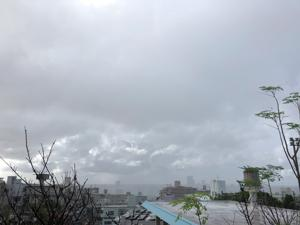
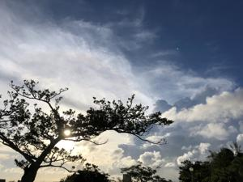

うるがいの話 ある日
最新: LINE友だちの追加【うるがいの話 ある日】とは 一日だけのプログです
『うるがいの話』の最新一日だけのプログで、通信料が少なく経済的だ。カニの画像をクリックすると全ての日付が載る『うるがいの話』サイトを表示します
|
|
【うるがいの話】 うるがい(ｳﾙｶﾞｲ urugai)とは、『もずくがに』の名前でとても大きくなります。 |
|---|---|
|
|
【カミマヤーの話】 猫のことを方言でマヤーといいます。カミマヤー（kamimayaa）とは、神の猫のことです。 |
|
【たながぁの音楽】 たながぁ（ﾀﾅｶﾞｰ tanagaa）とは手長えびのことで、何種類かあり大きいのは車 エビぐらいになります。 |

|
【ぶながぁの話】 ぶながぁ(ﾌﾞﾅｶﾞｰ bunagaa)とは、赤い髪の毛、赤い身体、そして身長は１ｍ２０ｃｍ ぐらい、川の蟹を食べているの目撃された。場所は沖縄県国頭郡大宜味村のと ある村僕の隣近所に住んでいる爺さんから、聞いた話です。 |
|
|
【ギーマの話】 ギーマ(giima)とは、山原の里山に咲くスズランに似た、 花を付けます。実は食べられます、 気が付くと口の周りが紫になっています。 |
2022年09月13日 (火）LINE友だちの追加
16:43
 
ＬＩＮＥの画面の『知り合いかも？クワさんがあなたを友だちに追加されまし
た』の意味が、ネットをみてもよくわからず、クワさんのブロックを解除し、
クワさんを友達に追加し、クワさんにトークで直接確認した。
LINEアプリをいじっていたら
クワさんから友達に追加されたと
あったので
一旦ブロックしてまいました
いまは、ブロックを解除しました
スミマセン
ところで、クワさんは私を友達に
追加すると
いう操作をしましたか?
それとも自動追加されましたか
教えていただければ幸いです。
では
既読 10:31
お久しぶりです。お元気ですか?今年度はヨーさんとゆったり
と仕事していますよ。
LINEアプリは、特に何も触っていないです。初期設定でそうなっているのか
もしれないです。
自動で友達追加が出るんてすね。
私は逆に、ウルガイさんがLINE友達申請していると思いました。
16:43
なるほど、クワさんのＬＩＮＥでは私が自動で友達追加されていた（という
設定をしている）という事である。
ヨメのスマホで確認すればいいのだが、ヨメはＬＩＮＥアプリが嫌いである
とても相談は出来ない。
１６時２６分 ビットコインの総資産 ￥９、２３１↑